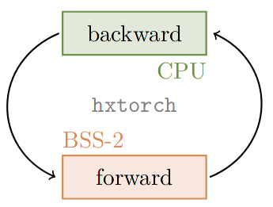
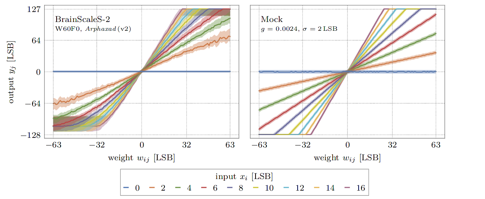

Train DNNs on BrainScaleS-2¶
This example uses the PyTorch extension hxtorch, already presented in the
introduction to the matrix multiplication, to train
a deep neural network (DNN).
In order to use the microscheduler we have to set some environment variables first:
from _static.common.helpers import setup_hardware_client
setup_hardware_client()
Some imports that are needed later:
import ipywidgets as w
import numpy as np
import torch
import torch.nn.functional as F
import hxtorch
import matplotlib as mpl
import matplotlib.pyplot as plt
from contextlib import suppress
with suppress(IOError):
plt.style.use("_static/matplotlibrc")
%matplotlib inline
from IPython.display import HTML
display(HTML("<style>.output_wrapper button.btn-default, "
".output_wrapper .ui-dialog-titlebar {display:none}</style>"))
from _static.common.helpers import save_nightly_calibration
Hardware in the loop¶
When training on the BrainScaleS-2 system using hxtorch, the multiply accumulate operation (MAC) in the forward pass is performed on the hardware, but the gradient is computed on the host computer:
{kind=link}
For the calculation of the gradients, a mathematical model is required that approximately reflects the behavior of the hardware operation. In hxtorch, the following very simple linear relationship is assumed for this purpose:
Here, the statistical noise \(\kappa_i\) of the neurons is assumed to be Gaussian distributed with standard deviation \(\sigma\). The gain factor \(g_\text{BSS-2}\) represents the conversion factor between the units of the input, weights and the analog-to-digital converter at the output and is specific to the individual hardware setup and its calibration.
For the calculations on the host, these parameters can be measured after initialization of the hardware connection:
# download claibration and initialize hardware configuration
save_nightly_calibration('hagen_cocolist.pbin')
hxtorch.init_hardware(hxtorch.CalibrationPath('hagen_cocolist.pbin'))
# measures the hardware gain and the average statistical noise on the outputs
hardware_parameter = hxtorch.measure_mock_parameter()
print(f"gain factor: {hardware_parameter.gain:.5f}")
print(f"noise std.: {hardware_parameter.noise_std:.5f}")
# use the measured parameters for backward pass and in mock mode
hxtorch.set_mock_parameter(hardware_parameter)
Simulating hardware: The mock mode¶
The linear model of the hardware presented above can optionally also be used for the forward pass with hxtorch. It also features the additional noise, reduced resolution and restricted value ranges of the system.
{kind=link}
This so-called mock mode can be switched on and off individually for
each hxtorch operation and for each layer via the mock parameter,
e.g.
hxtorch.matmul(..., mock=True)
It is especially convenient when no BrainScaleS-2 system is available and allows fast prototyping of DNN models.
References for further reading
The integration into the PyTorch software frontend hxtorch and a
benchmark on the human activity recognition dataset is published in:
Spilger, Philipp, et al. “hxtorch: PyTorch for BrainScaleS-2.” IoT Streams for Data-Driven Predictive Maintenance and IoT, Edge, and Mobile for Embedded Machine Learning. Springer, Cham, 2020. 189-200. https://doi.org/10.1007/978-3-030-66770-2_14
More details on the implementation of the backward pass, the mock mode and the layer initilization can be found in (chapter 4.2 ff.):
Emmel, Arne “Inference with Convolutional Neural Networks on Analog Neuromorphic Hardware” Master’s Thesis. University of Heidelberg. pdf
Example application: the Yin-Yang dataset¶
class YinYangDataset(torch.utils.data.dataset.Dataset):
"""
The Yin-Yang dataset. Slightly modified version adapted from:
https://github.com/lkriener/yin_yang_data_set
"""
def __init__(self, r_small=0.1, r_big=0.5, size=1000, seed=42):
super(YinYangDataset, self).__init__()
# numpy RNG to allow compatibility to other learning frameworks
self.rng = np.random.RandomState(seed)
self.r_small = r_small
self.r_big = r_big
self.size = size
def get_sample(self, goal=None):
# sample until goal is satisfied
found_sample_yet = False
while not found_sample_yet:
# sample x,y coordinates
x, y = self.rng.rand(2) * 2. * self.r_big
# check if within yin-yang circle
if np.sqrt((x - self.r_big)**2 + (y - self.r_big)**2) > self.r_big:
continue
# check if they have the same class as the goal for this sample
c = self.which_class(x, y)
if goal is None or c == goal:
found_sample_yet = True
break
return x, y, c
def which_class(self, x, y):
# equations inspired by
# https://link.springer.com/content/pdf/10.1007/11564126_19.pdf
d_right = self.dist_to_right_dot(x, y)
d_left = self.dist_to_left_dot(x, y)
criterion1 = d_right <= self.r_small
criterion2 = d_left > self.r_small and d_left <= 0.5 * self.r_big
criterion3 = y > self.r_big and d_right > 0.5 * self.r_big
is_yin = criterion1 or criterion2 or criterion3
is_circles = d_right < self.r_small or d_left < self.r_small
if is_circles:
return 2
return int(is_yin)
def dist_to_right_dot(self, x, y):
return np.sqrt((x - 1.5 * self.r_big)**2 + (y - self.r_big)**2)
def dist_to_left_dot(self, x, y):
return np.sqrt((x - 0.5 * self.r_big)**2 + (y - self.r_big)**2)
def __getitem__(self, index):
# keep num of class instances balanced by using rejection sampling
# choose class for this sample
goal_class = self.rng.randint(3)
x, y, c = self.get_sample(goal=goal_class)
sample = (torch.tensor([x, y, 1-x, 1-y], dtype=torch.float), c)
return sample
def __len__(self):
return self.size
Let’s take a look at this dataset!
colors = ('black', 'white', 'orange')
class_names = ('yin', 'yang', 'dot')
num_samples = 2000
loader = torch.utils.data.DataLoader(
dataset=YinYangDataset(size=num_samples),
batch_size=num_samples)
The samples in the modified version are randomly redrawn each time they are accessed, so that each sample will be presented to the network only once. Repeated execution of the following code cell therefore shows slightly different samples each time. The number of samples is the same for each of the three classes.
samples, labels = next(iter(loader))
fig, ax = plt.subplots(1,1)
for i in range(3):
ax.scatter(
*samples[labels==i][..., :2].t(),
c=colors[i], label=class_names[i])
ax.set_aspect('equal')
ax.set_facecolor('gray')
ax.set_xlim(0,1); ax.set_ylim(0,1)
ax.set_xlabel("x"); ax.set_ylabel("y")
_=ax.legend()

Further reading
This dataset as well as some model proposes and benchmarks are presented in:
Kriener, L., Göltz, J., & Petrovici, M. A. (2021). The Yin-Yang dataset. arXiv preprint: arXiv:2102.08211.
def alpha_cmap(color):
"""
Returns a colormap ranging from transparent to specified color
"""
cmap = np.broadcast_to(mpl.colors.to_rgba(color), (256, 4)).copy()
cmap[:, -1] = np.linspace(0, 1, 256)
return mpl.colors.ListedColormap(cmap)
def test_train_epoch(model: torch.nn.Module,
loader: torch.utils.data.DataLoader,
optimizer: torch.optim.Optimizer):
"""
Test the model and train for a single epoch afterwards.
:param model: The model
:param loader: Data loader containing the train data set
:param optimizer: Optimizer that handles the weight updates
"""
# prepare test data (grid of equal spaced samples):
gridsize = 16 # one dimension of the test grid
x = y = torch.linspace(0, 1, gridsize)
x, y = torch.meshgrid(x, y); x, y = x.flatten(), y.flatten()
data_test = torch.tensor(list(zip(x, y, 1-x, 1-y)), requires_grad=True)
data, target = next(iter(loader))
data = torch.cat((data_test, data)) # prepend to train data
# the actual training:
model.train()
optimizer.zero_grad()
output = model(data)
loss = F.cross_entropy(output[len(data_test):], target)
loss.backward()
optimizer.step()
# get test data from output and reshape:
with torch.no_grad():
output_test = F.softmax(output[:len(data_test)], dim=-1)
output_test = output_test.reshape(gridsize, gridsize, -1)
return torch.transpose(output_test, 0, 1)
def train(model: torch.nn.Module,
loader: torch.utils.data.DataLoader,
scheduler: torch.optim.lr_scheduler._LRScheduler,
num_epochs: int = 200):
"""
Train the model while displaying the test results.
:param model: The model
:param loader: Data loader containing the train data set
:param scheduler: Scheduler that handles the weight updates
:param num_epochs: Number of epochs to train
"""
fig = plt.figure()
ax = plt.gca()
ax.grid(False)
ax.set_title("Epoch 0")
imgs = []
for i, c in enumerate(colors):
imgs.append(plt.imshow(
torch.zeros((1, 1)), vmin=0, vmax=1,
extent=(0, 1, 0, 1), origin='lower',
cmap=alpha_cmap(c)))
plt.xlabel("$x$"); plt.ylabel("$y$")
for _ in range(num_epochs + 1):
test_out = test_train_epoch(model, loader, scheduler.optimizer)
for i, img in enumerate(imgs):
img.set_data(test_out[..., i])
ax.set_title(f"Epoch {scheduler.last_epoch}")
fig.canvas.draw()
scheduler.step()
wout = w.Output(layout=w.Layout(height="450px")); display(wout)
plt.close(); wout.layout=w.Layout(height="0px")
Modeling with hxtorch feels almost like using PyTorch normally, you can even use layers of hxtorch and PyTorch together. If you are familiar with PyTorch, the code below will also look familiar to you:
class Model(torch.nn.Module):
"""
Classify the YinYang dataset.
"""
def __init__(self, mock: bool = False):
super().__init__()
self.classifier = torch.nn.Sequential(
hxtorch.nn.Linear(4, 128, mock=mock),
hxtorch.nn.ConvertingReLU(shift=1),
hxtorch.nn.Linear(128, 3, avg=5, mock=mock),
)
def forward(self, *x):
x = x[0] * 31. # scale to the whole input range
x = self.classifier(x)
return x
model_mock = Model(mock=True)
model_mock
Model(
(classifier): Sequential(
(0): Linear(in_features=4, out_features=128, num_sends=20, mock=True)
(1): ConvertingReLU(shift=1)
(2): Linear(in_features=128, out_features=3, num_sends=4, mock=True)
)
)
batch_size = 350
lr = 1 # learning rate
gamma = 0.99 # learning parameters decay
loader = torch.utils.data.DataLoader(
dataset=YinYangDataset(size=batch_size),
batch_size=batch_size)
scheduler = torch.optim.lr_scheduler.StepLR(
torch.optim.Adam(model_mock.parameters(), lr=lr),
step_size=1, gamma=gamma)
train(model_mock, loader, scheduler, num_epochs=200)

model_hw = Model(mock=False)
# initialize with state of mock model
model_hw.load_state_dict(model_mock.state_dict())
model_hw
Model(
(classifier): Sequential(
(0): Linear(in_features=4, out_features=128, bias=None, num_sends=20)
(1): ConvertingReLU(shift=1, mock=True)
(2): Linear(in_features=128, out_features=3, bias=None, num_sends=4)
)
)
lr = 0.2
gamma = 0.9
scheduler_hw = torch.optim.lr_scheduler.StepLR(
torch.optim.Adam(model_hw.parameters(), lr=lr),
step_size=1, gamma=gamma)
train(model_hw, loader, scheduler_hw, num_epochs=15)
{kind=link}